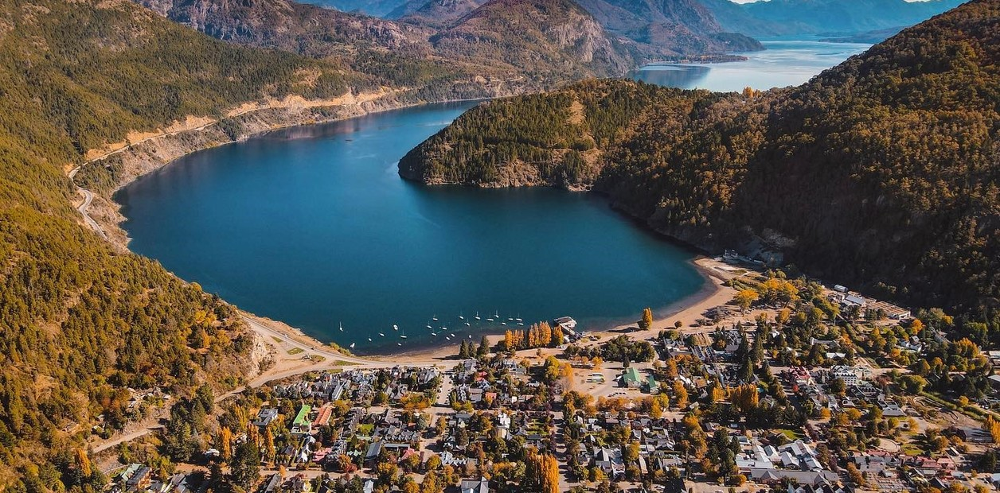

Playas y montañas, un solo lugar
Elegí tu próximo horizonte
Costas para perder la noción del tiempo y cumbres para ganar perspectiva. Explorá los destinos y llevate una guía de viaje lista para imprimir.
Ver destinosDestinos turísticos
Elegí una categoría y descargá el itinerario recomendado para cada lugar.
-

Mar del Plata
La "Perla del Atlántico" combina playas extensas, un puerto pesquero activo y una vida nocturna que no se detiene en temporada alta.
Descargar guía de viaje (PDF) -

Pinamar
Bosques de pinos que llegan hasta la arena, playas tranquilas y un balneario pensado para descansar en familia.
Descargar guía de viaje (PDF) -

Punta del Este
Playas sobre dos costas, la escultura de La Mano y una gastronomía que mezcla lo clásico uruguayo con propuestas de autor.
Descargar guía de viaje (PDF)
-

San Carlos de Bariloche
Lagos color turquesa, bosques andino-patagónicos y cerros para hacer trekking, esquí o simplemente mirar el paisaje.
Descargar guía de viaje (PDF) -

Mendoza
La puerta de los Andes: viñedos al pie de la cordillera, alta montaña y el cerro Aconcagua como telón de fondo.
Descargar guía de viaje (PDF) -

San Martín de los Andes
Un pueblo de montaña sobre el lago Lácar, punto de partida ideal para recorrer los siete lagos y el cerro Chapelco.
Descargar guía de viaje (PDF)
Sobre nosotros
Rutas & Cumbres es un proyecto armado por viajeros para viajeros. Seleccionamos destinos que conocemos de primera mano, tanto de costa como de montaña, y armamos guías breves con lo esencial: cómo llegar, cuándo ir y qué no te podés perder.
No vendemos paquetes ni reservas: nuestro objetivo es ayudarte a planear el viaje con información clara, para que el tiempo de decidir sea corto y el de disfrutar, largo.
- Destinos publicados
- 6
- Categorías
- Playa y montaña
- Guías descargables
- Formato PDF
Contacto
¿Preguntas, sugerencias o querés que sumemos un destino? Escribinos.